| Crystal Palace, United
Kingdom Type: Parkland Circuit Photographs Taken: July 2004 |
|
| Crystal Palace, United
Kingdom Type: Parkland Circuit Photographs Taken: July 2004 |
|
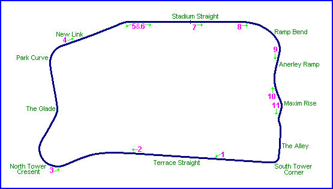
Numbers and arrows on map indicate the location and direction where the photographs
were taken.
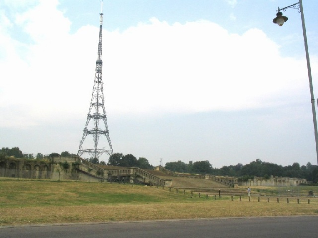
1. - Terraces. The original asphalt is under
the grass!
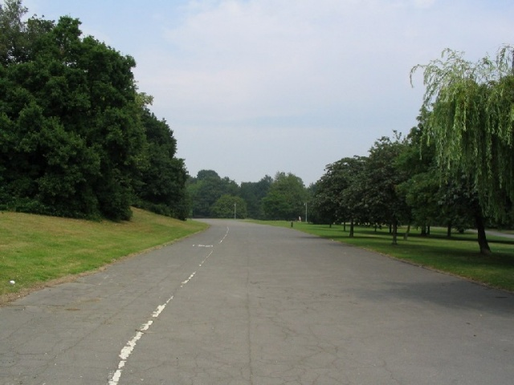
2. - At 2/3 of the straight,
heading to North Tower Crescent, approaching the kink.
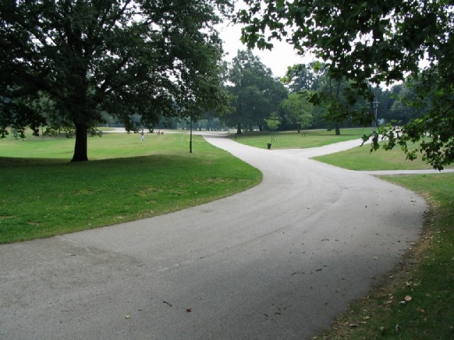
3. - North Tower Crescent looking back,
showing the exit of the kink (far middle of the photo).
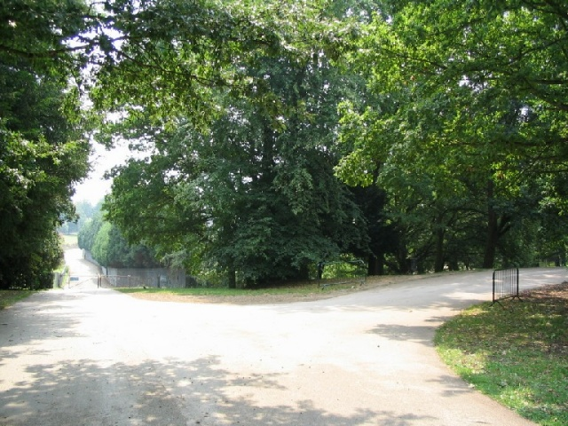
4. - This is the New link. Photo taken at
the exit of North-East turn. The New link is a sharp dip. Original track was turning right
to the infield.
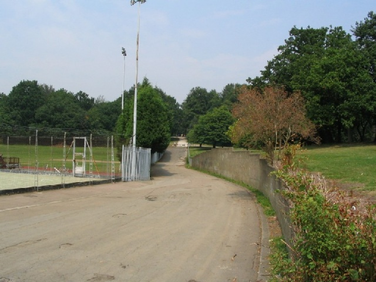
5. - Looking back to the New link. The wall
at right (left side of the track) can be seen on early races photos.
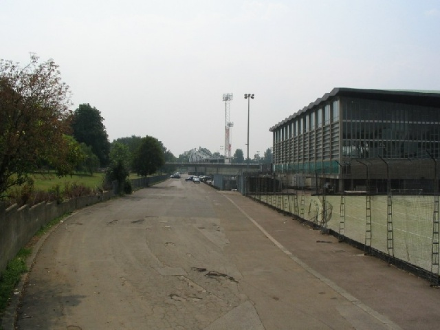
6. - Same place as previous photo, this time
looking ahead. New buildings on the right side. Old wall on the left side.
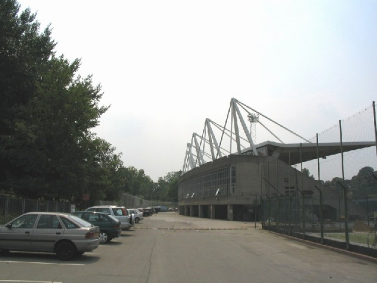
7. - Approaching Ramp bend. The grandstands
of the stadium are built on a part of the track.
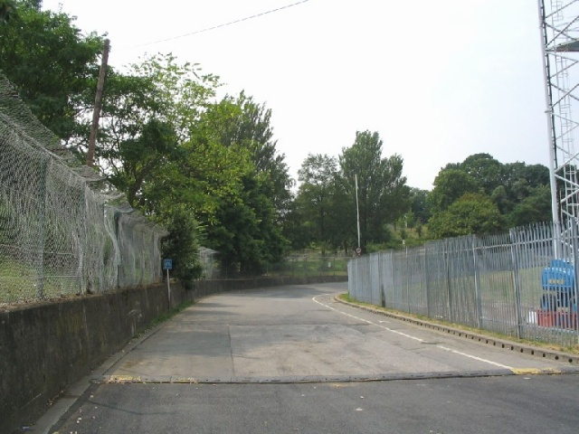
8. - Ramp bend, with the original wall on
the left side. This turn is low banked.
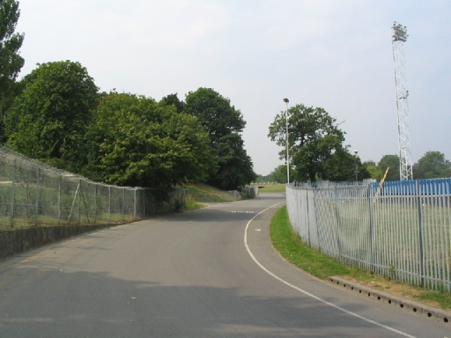
9. - Continuing through Ramp bend
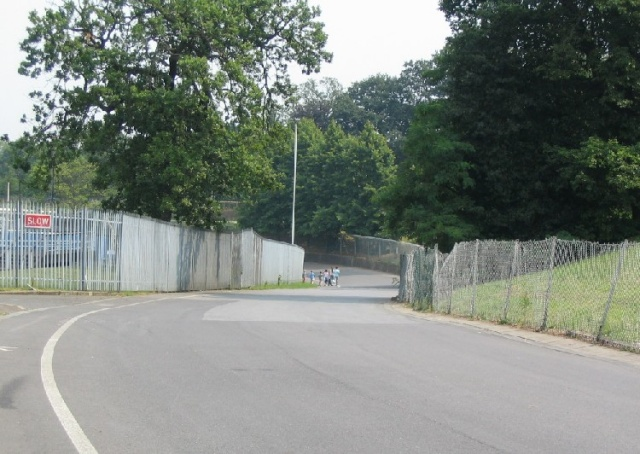
10. - Maxim Rise, looking back to the exit
of Ramp bend
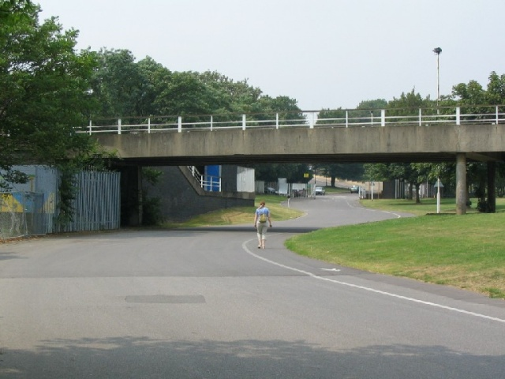
11. - Maxim Rise, looking ahead (underneath
the access bridge to the station).
Photographs ©Michel Marti. Reproduced here with kind permission.